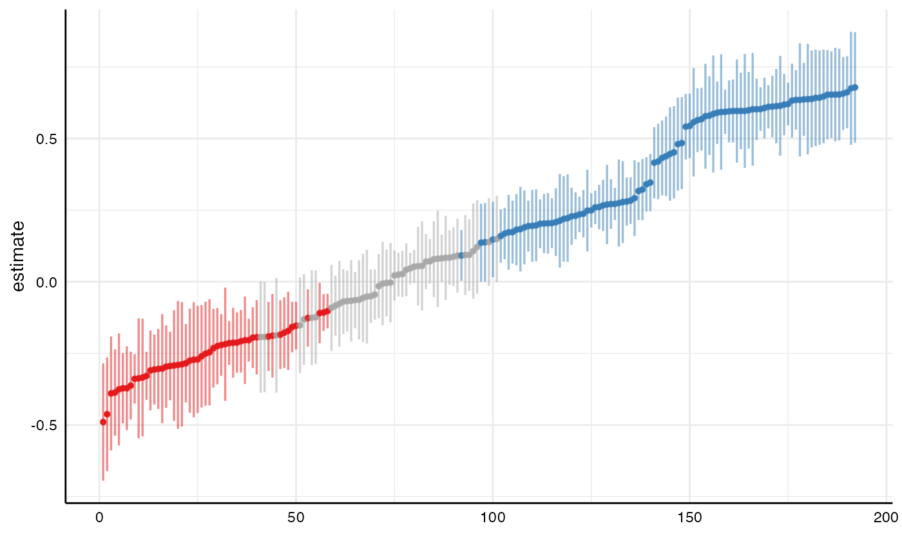
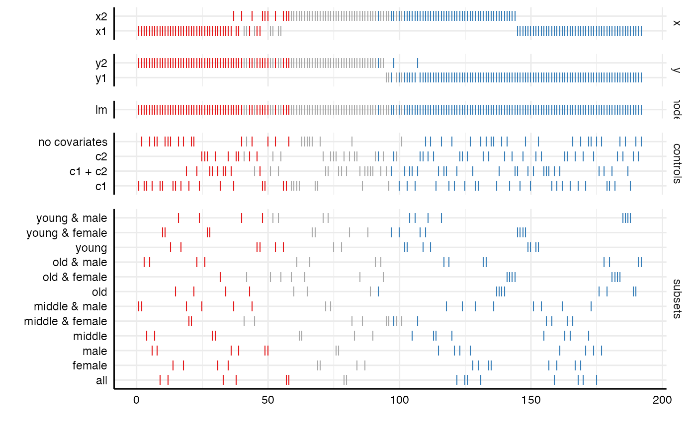
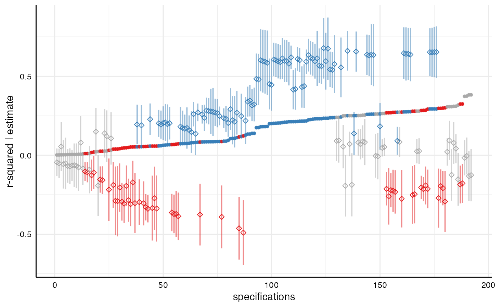
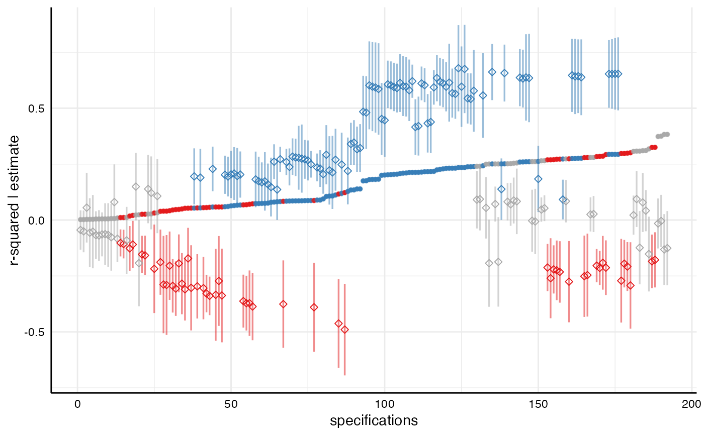

This function plots visualizations of the specification curve
analysis. The function requires an object of class specr.object, usually
the results of calling specr() to create a standard visualization of the
specification curve analysis. Several types of visualizations are possible.
Arguments
- x
A
specr.objectobject, usually resulting from callingspecr().- type
What type of figure should be plotted? If
type = "default", the standard specification curve analysis plot (the specification curve as the upper panel and an overview of the relevant choices as the lower panel) is created. Iftype = "curve", only the specification curve (upper panel of the default plot) is plotted. Iftype = "choices", only the choice panel (lower part of the default plot) is plotted. Iftype = "boxplot", an alternative visualization of differences between choices is plotted that summarizes results per choice using box-and-whisker plot(s). Iftype = "samplesizes", a barplot of sample sizes per specification is plotted. See examples for more information.- var
Which parameter should be plotted in the curve? Defaults to
estimate, but other parameters (e.g., p.value, fit_r.squared,...) can be plotted too.- group
Should the arrangement of the curve be grouped by a particular choice? Defaults to NULL, but can be any of the present choices (e.g., x, y, controls...)
- choices
A vector specifying which analytic choices should be plotted. By default, all choices (x, y, model, controls, subsets) are plotted.
- labels
Labels for the two parts of the plot
- rel_heights
vector indicating the relative heights of the plot.
- desc
Logical value indicating whether the curve should the arranged in a descending order. Defaults to FALSE.
- null
Indicate what value represents the 'null' hypothesis (defaults to zero).
- ci
Logical value indicating whether confidence intervals should be plotted.
- ribbon
Logical value indicating whether a ribbon instead should be plotted
- formula
In combination with
type = "variance", you can provide a specific formula to extract specific variance components. The syntax of the formula is based onlme4::lmer()and thus looks something like, e.g.:"estimate ~ 1 + (1|x) + (1|y)"(to estimate the amount of variance explained by different independentxand dependent variablesy). All other choices are then subsumed under residual variance. By no formula is provided, all choices (x, y, model, controls, and subsets) that have more than one alternative are included. See examples for further details.In combination with
type = "variance", logical value indicating whether the intra-class correlations (i.e., percentages of variance explained by analstical choices) should be printed or not. Defaults to TRUE.- ...
further arguments passed to or from other methods (currently ignored).
Value
A ggplot object that can be customized further.
Examples
# Specification Curve analysis ----
# Setup specifications
specs <- setup(data = example_data,
y = c("y1", "y2"),
x = c("x1", "x2"),
model = "lm",
distinct(example_data, group1),
distinct(example_data, group2),
controls = c("c1", "c2"))
# Run analysis
results <- specr(specs)
# Resulting data frame with estimates
as_tibble(results) # This will be used for plotting
#> # A tibble: 192 × 28
#> x y model controls subsets group1 group2 formula model_function term
#> <chr> <chr> <chr> <chr> <chr> <fct> <fct> <glue> <list> <chr>
#> 1 x1 y1 lm no cova… middle… middle female y1 ~ x… <fn> x1
#> 2 x1 y1 lm no cova… old & … old female y1 ~ x… <fn> x1
#> 3 x1 y1 lm no cova… young … young female y1 ~ x… <fn> x1
#> 4 x1 y1 lm no cova… female NA female y1 ~ x… <fn> x1
#> 5 x1 y1 lm no cova… middle… middle male y1 ~ x… <fn> x1
#> 6 x1 y1 lm no cova… old & … old male y1 ~ x… <fn> x1
#> 7 x1 y1 lm no cova… young … young male y1 ~ x… <fn> x1
#> 8 x1 y1 lm no cova… male NA male y1 ~ x… <fn> x1
#> 9 x1 y1 lm no cova… middle middle NA y1 ~ x… <fn> x1
#> 10 x1 y1 lm no cova… old old NA y1 ~ x… <fn> x1
#> # … with 182 more rows, and 18 more variables: estimate <dbl>, std.error <dbl>,
#> # statistic <dbl>, p.value <dbl>, conf.low <dbl>, conf.high <dbl>,
#> # fit_r.squared <dbl>, fit_adj.r.squared <dbl>, fit_sigma <dbl>,
#> # fit_statistic <dbl>, fit_p.value <dbl>, fit_df <dbl>, fit_logLik <dbl>,
#> # fit_AIC <dbl>, fit_BIC <dbl>, fit_deviance <dbl>, fit_df.residual <int>,
#> # fit_nobs <int>
# Visualizations ---
# Plot results in various ways
plot(results) # default
plot(results, choices = c("x", "y")) # specific choices
plot(results, ci = FALSE, ribbon = TRUE) # exclude CI and add ribbon instead
plot(results, type = "curve")

plot(results, type = "choices")

plot(results, type = "samplesizes")
plot(results, type = "boxplot")
 # Grouped plot
plot(results, group = controls)
# Grouped plot
plot(results, group = controls)
 # Alternative and specific visualizations ----
# Other variables in the resulting data set can be plotted too
plot(results,
type = "curve",
var = fit_r.squared, # extract "r-square" instead of "estimate"
ci = FALSE)

# Such a plot can also be extended (e.g., by again adding the estimates with
# confidence intervals)
library(ggplot2)
plot(results, type = "curve", var = fit_r.squared) +
geom_point(aes(y = estimate), shape = 5) +
labs(x = "specifications", y = "r-squared | estimate")

# We can also investigate how much variance is explained by each analytical choice
plot(results, type = "variance")
#> boundary (singular) fit: see help('isSingular')
#> grp vcov icc percent
#> 1 subsets 0.00 0.00 0.00
#> 2 controls 0.00 0.00 0.41
#> 3 y 0.16 0.83 83.34
#> 4 x 0.00 0.01 0.57
#> 5 Residual 0.03 0.16 15.69
# By providing a specific formula in `lme4::lmer()`-style, we can extract specific choices
# and also include interactions between chocies
plot(results,
type = "variance",
formula = "estimate ~ 1 + (1|x) + (1|y) + (1|group1) + (1|x:y)")
#> grp vcov icc percent
#> 1 x:y 0.05 0.26 26.29
#> 2 group1 0.00 0.01 0.79
#> 3 y 0.13 0.69 69.49
#> 4 x 0.00 0.00 0.00
#> 5 Residual 0.01 0.03 3.44
## Combining several plots ----
# `specr` also exports the function `plot_grid()` from the package `cowplot`, which
# can be used to combine plots meaningfully
a <- plot(results, "curve")
b <- plot(results, "choices", choices = c("x", "y", "controls"))
c <- plot(results, "samplesizes")
plot_grid(a, b, c,
align = "v",
axis = "rbl",
rel_heights = c(2, 3, 1),
ncol = 1)
# Alternative and specific visualizations ----
# Other variables in the resulting data set can be plotted too
plot(results,
type = "curve",
var = fit_r.squared, # extract "r-square" instead of "estimate"
ci = FALSE)

# Such a plot can also be extended (e.g., by again adding the estimates with
# confidence intervals)
library(ggplot2)
plot(results, type = "curve", var = fit_r.squared) +
geom_point(aes(y = estimate), shape = 5) +
labs(x = "specifications", y = "r-squared | estimate")

# We can also investigate how much variance is explained by each analytical choice
plot(results, type = "variance")
#> boundary (singular) fit: see help('isSingular')
#> grp vcov icc percent
#> 1 subsets 0.00 0.00 0.00
#> 2 controls 0.00 0.00 0.41
#> 3 y 0.16 0.83 83.34
#> 4 x 0.00 0.01 0.57
#> 5 Residual 0.03 0.16 15.69
# By providing a specific formula in `lme4::lmer()`-style, we can extract specific choices
# and also include interactions between chocies
plot(results,
type = "variance",
formula = "estimate ~ 1 + (1|x) + (1|y) + (1|group1) + (1|x:y)")
#> grp vcov icc percent
#> 1 x:y 0.05 0.26 26.29
#> 2 group1 0.00 0.01 0.79
#> 3 y 0.13 0.69 69.49
#> 4 x 0.00 0.00 0.00
#> 5 Residual 0.01 0.03 3.44
## Combining several plots ----
# `specr` also exports the function `plot_grid()` from the package `cowplot`, which
# can be used to combine plots meaningfully
a <- plot(results, "curve")
b <- plot(results, "choices", choices = c("x", "y", "controls"))
c <- plot(results, "samplesizes")
plot_grid(a, b, c,
align = "v",
axis = "rbl",
rel_heights = c(2, 3, 1),
ncol = 1)